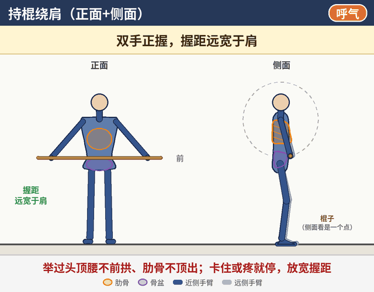
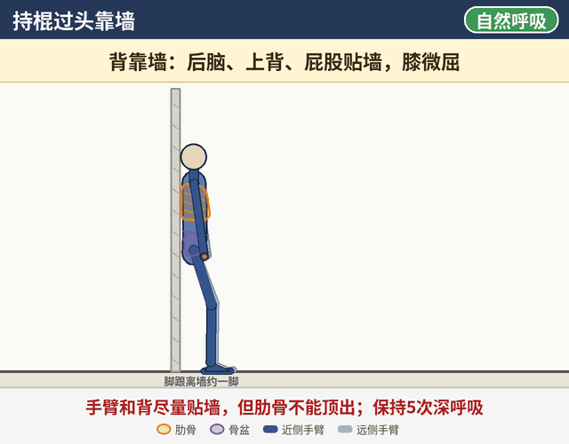
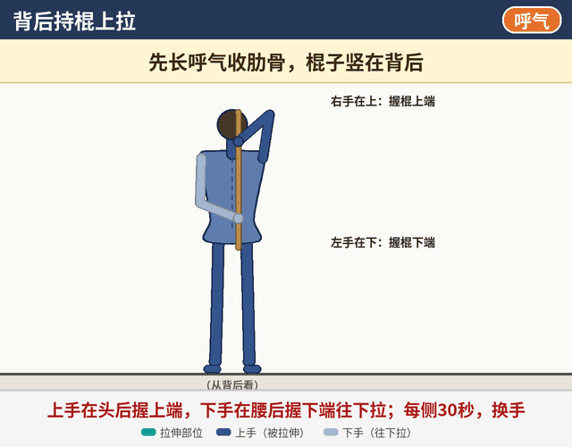

每个动作都先做好呼吸设置：先呼气收肋骨，再吸气往腰两侧和后背撑住。
怎么用：练前热身或卧推前做，按顺序：持棍绕肩 → 持棍过头靠墙 → 背后持棍上拉，约10分钟。用木棍、PVC管或弹力带都可以。
怎么看动画：深色是靠近你一侧的手臂，浅色是另一侧；橙色轮廓是肋骨，紫色是骨盆，青色是拉伸部位；棍子从侧面看是一个点。右上角标签提示吸气 / 呼气。
怎么看动画：深色是靠近你一侧的手臂，浅色是另一侧；橙色轮廓是肋骨，紫色是骨盆，青色是拉伸部位；棍子从侧面看是一个点。右上角标签提示吸气 / 呼气。
1
持棍绕肩
肩部活动度 · 热身（正面+侧面看）

量10-15个来回 × 2组；练前热身或卧推前做。
握法
双手正握，握距远宽于肩，能直臂从身前绕到身后、不硬扯。
准备
站直，膝微屈；先长呼气收肋骨，下腹微收。
动作
- 棍子放在大腿前，先长呼气收肋骨。
- 手肘伸直，慢慢把棍子举过头顶。
- 继续往后绕到身后（臀部后方）。
- 原路返回到身前，算1个来回；每个来回约5-6秒。
关键点
- 举过头顶时腰不前拱、肋骨不顶出。
- 卡住或疼就停，放宽握距再试。
- 两肩同时过去，不要一侧先过。
- 手肘全程伸直，慢慢做。
- 能轻松完成后，约每周把握距收窄1-2cm。
常见错误
- 握距太窄，硬扯过去。
- 举过头时腰往前拱、肋骨顶出来代偿。
- 弯手肘，或一侧肩先过去。
- 速度太快，靠甩过去。
2
持棍过头靠墙
肩上举活动度 · 肋骨控制（侧面看）

量保持5次深呼吸 × 2-3组。
握法
双手正握，约与肩同宽或略宽。
准备
背靠墙站，脚跟离墙约一脚，膝微屈；后脑、上背、屁股贴墙；长呼气收肋骨，让腰贴墙。
动作
- 手肘伸直，慢慢把棍子举过头。
- 在肋骨不顶出的前提下，让手臂和背尽量贴墙。
- 保持做5次深呼吸：吸气往腰两侧和后背撑住，长呼气时手臂再往墙靠一点。
- 慢慢放下。
关键点
- 肋骨收住、腰贴墙优先，手够不到墙也没关系。
- 后脑、上背、屁股始终贴墙。
- 每次长呼气时手臂再往墙靠一点点。
常见错误
- 手硬往墙上够，腰离开墙、肋骨往前顶出（动画前半段的错误示范）。
- 耸肩、仰头。
- 憋气。
3
背后持棍上拉
肩后侧 / 腋下拉伸（从背后看）

量每侧30秒，换手。
握法
一只手举过头、屈肘，在头后握棍上端；另一只手在腰后握棍下端，棍子竖直贴着后背。
准备
站直，长呼气收肋骨，下腹微收。
动作
- 下面的手慢慢把棍子往下拉。
- 上面那只手臂的后侧/腋下有拉伸感就停住。
- 保持30秒，自然呼吸。
- 换手（另一只手在上），同样30秒。
关键点
- 拉到有拉伸感即可，不要硬拉。
- 肋骨不顶出、腰不前拱。
- 上面的手肘尽量指向天花板。
常见错误
- 拉得太猛，肩前侧疼。
- 腰往前拱或身体侧弯来代偿。
- 耸肩。
安全提示
- 肩前侧尖锐疼痛、卡住或弹响就停，去查肩关节。
- 出现腿麻、放射痛或疼痛加重，先停练并及时就医。
- 建议找运动康复师当面评估，再根据情况调整动作和强度。
- 本页为一般性训练示意，不能代替专业医疗建议。